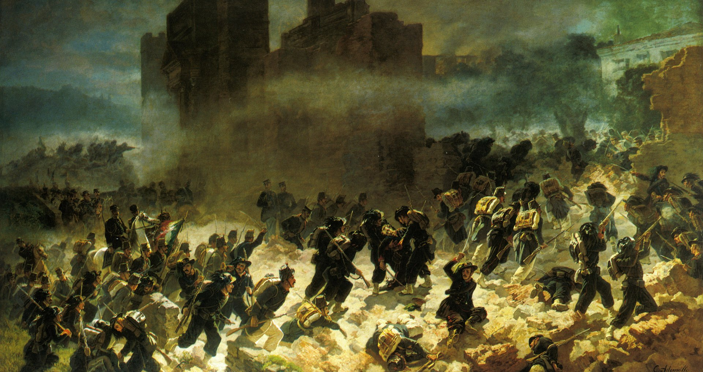
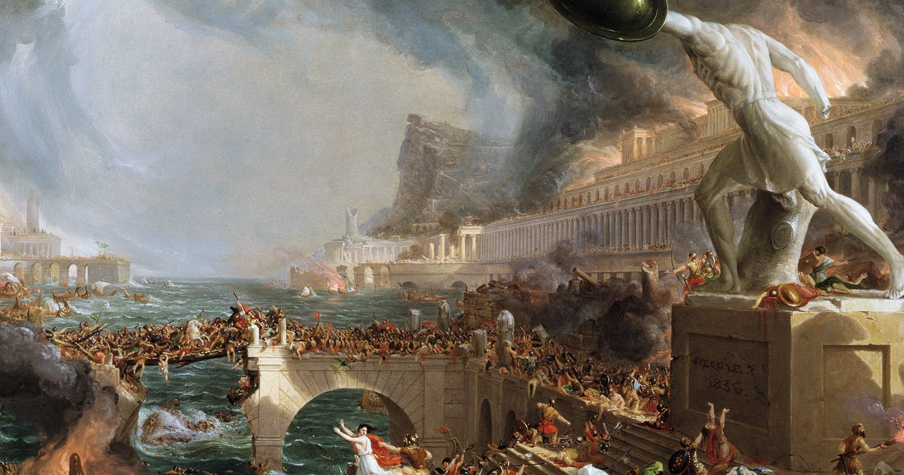

In 395 werd het Romeinse Rijk in twee delen opgesplitst, het West-Romeinse Rijk en het Oost-Romeinse Rijk. In de 4e eeuw waren er ook volksverhuizingen. Het West-Romeinse Rijk was zwak door de splitsing en kon deze volkeren niet tegenhouden. In 476 liet de Germaan Odoaker de laatste West-Romeinse keizer, Romulus Augustulus, afzetten. Rome was toen in handen van de Germanen

Klik hier voor meer informatie over de val van Rome.